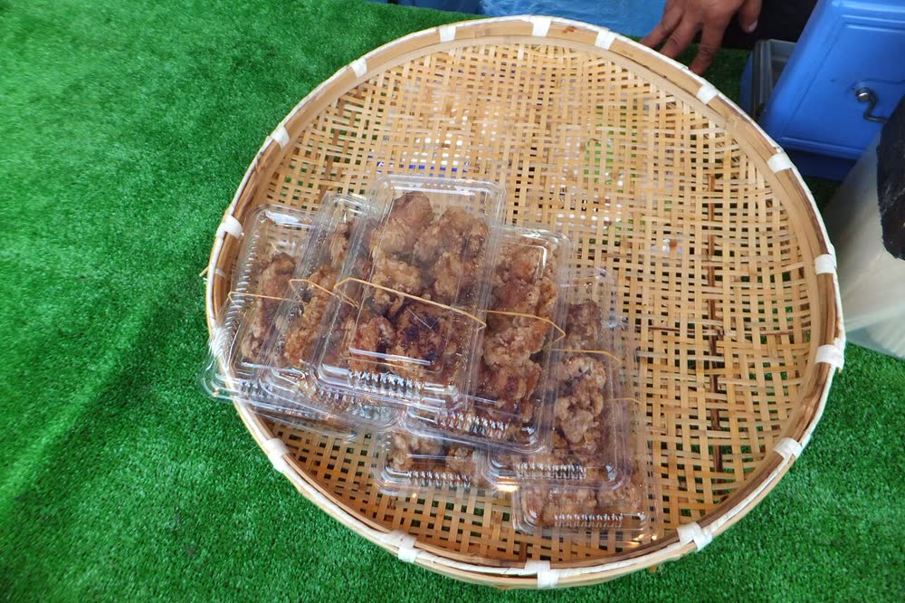

晚餐前後 · 站前步行範圍
中津唐揚
中津からあげ
中津被日本唐揚協會認定為「唐揚聖地」，市內唐揚專賣店密度極高，而且以外帶為主，是在地人的日常味道。
來歷
- 戰後糧食短缺時期，國家鼓勵設養雞場，中津一帶養雞業因此興盛。
- 一般說法是從舊滿洲歸國的人，把在中國吃到的炸雞做法帶回來，演變成今天的唐揚。
- 唐揚專賣店的發源地其實是隔壁的宇佐市；中津最早的專賣店是 1970 年開的「森山」與「スーパー細川」。
- 多數店家接單後才下鍋現炸，所以外帶文化根深柢固。
小提醒
Day 1 晚餐口袋名單以居酒屋、燒肉為主。想吃正宗中津唐揚，可以在站前專賣店外帶一份回飯店當宵夜。